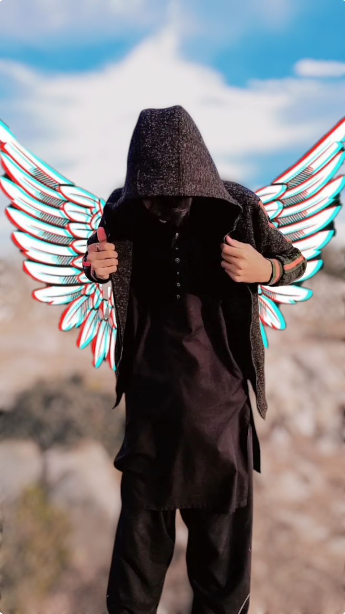

Building the future of web with Code & Logic

I am a passionate developer based in Chakral, Chakwal. I specialize in creating high-quality, high-performance websites that don't just look good but work perfectly.
wasicenter120@gmail.com
03342002756
Chakral, Chakwal, Pakistan